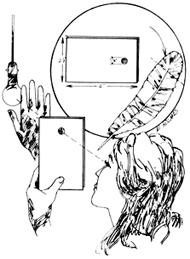
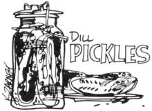

Here are a few more of THE Mother Earth News(restricted) syndicated features which have appeared in 100+ newspapers over the past three and a half years.
Oh boy. Here we are again, well into summer, and every neighborhood is filled with young adults who spend all day moping around the house with "nothing to do".
"Become a camp counselor," says Deb Sillers, a young lady who has done just that. "It will get you out into the country, pay you $300 to $500 a session in addition to room and board, give you time to be quiet and think, put you in contact with people who have a knowledge of woodcraft and give you the opportunity to explore firsthand the currently popular back-to-the-land movement."
If you're 19 or over and think you might like to line up a counseling job for next summer, you can make a good beginning by contacting the following two agencies: Association of Private Camps, 55 West 42nd Street, New York, New York 10036 and American Camping Association, Bradford Woods, Martinsville, Indiana 46151. The latter offers a Dire Directory of Accredited Camps for 55.95.
Here's a summertime "scientific experiment" that Jim Baker describes in his book, How To Be A Kid Again.
Cut a piece of cardboard (taken from a soapbox or the back of a note pad) so that, when it's folded in the middle, it makes a double-thick "holder" measuring about 2 1/2" by 4". Punch a quarter-inch hole through both layers and then snugly sandwich and glue the tip of a chicken feather in between.
Now line up the "lens" and one hand with your eye and an uncovered light bulb . . . and you'll be able to see the bones in your hand and fingers with the aid of this "feather X-ray"!
Well now. If you didn't can your early cucumbers or your midsummer cucumbers, you'd better roll up your sleeves and get some of this year's late cucumbers safely stored away for the winter. I mean, a family just has to be prepared to satisfy that cold weather craving for something tangy to munch on . .. doesn't it? And what better preparation can there be than homemade dill pickles? Here's the recipe Jane Shuttleworth uses:
Wash four quarts of medium-sized cokes and let them stand overnight in cold water. Put a spray of dill in the bottom of a glass one-quart canning jar and pack the container as full of cucumber, as you can wedge them without bruising your future pickles. Repeat this packing process with additional jars until you've used up all your cukes. Top each container with another spray of dill and a clove of garlic. Add a small hot red pepper if you like, although many folks prefer to leave it out.
Next combine four cups of apple cider vinegar and one cup of salt in three quarts of water. Make sure that your salt is the pickling, fairy or kosher variety . . . rather than the so-called rock salt (which is not food-pure) or ordinary table salt (which contains iodine and other additives that will darken your pickles and cloud the brine around them).
Bring the vinegar-salt-water solution to a brisk rolling boil in a glass, stainless steel or unchipped enameled pan. Fill each jar to overflowing with the brine, seal the containers and store them in a cool, dark place for at least a month. You've just canned dill pickles!
|
|
 |
 |